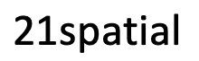
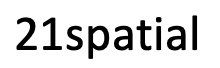

About
About
The 3rd ACM SIGSPATIAL International Workshop on APIs and Libraries for Geospatial Data Science (SpatialAPI 2021) is to provide students and researchers with hands-on experience with useful APIs and libraries related to geospatial data science, spanning from spatial big data management to advanced analytics enabled by machine learning, optimization, and more. At the same time, it gives an opportunity for API providers to reach out to targeted audiences who can benefit from their APIs. The API providers will be able to get direct feedback for their users to understand how to further improve their APIs and make them more user-friendly. The tutorials will be done in a classroom-style setting where the audience will bring their laptops to follow the directions of the presenter.
Organization Committee
Program Chairs
| Yiqun Xie (University of Maryland) |
| Jia Yu (Washington State University, Apache Software Foundation) |
Program Committee
| Peter Baumann (Jacobs University Bremen) | Ahmed Eldawy (University of California, Riverside) |
| Amr Magdy (University of California, Riverside) | Janet Reyes (University of California, Riverside) |
| Ibrahim Sabek (Massachusetts Institute of Technology) | Martin Werner (Technical University of Munich) |
Invited Tutorial
-

James Kyle, Jeff Ho, Eugene Chong, Michael Grazziani
SafeGraph official event page: Understand Consumer Behavior With Verified Foot Traffic Data
Our workshop’s objective is to provide professionals, researchers, and practitioners interested in deriving human movement patterns from location data. We use a sample of our Weekly and Monthly Patterns and Core Places products to perform market research on a potential new coffee shop location. How far are customers willing to travel for coffee? What location will receive the most visibility? Where do most of the coffee customers come from? We’ll address these concerns and more in building a market analysis proposal in real time.
Schedule
Please read the preparation steps listed in each tutorial proposal to download or install necessary data and software.
 : https://acm-org.zoom.us/j/97413030964 Passcode: 
: https://acm-org.zoom.us/j/97413030964 Passcode: 
* You must sign in your Zoom account in order to join this meeting. If you use your institution's Zoom account, you might need to choose the "SSO" option when log in.
* You will first be put in a waiting room. The organizers then will verify your identity and admit you into the meeting.
* To be admitted into the meeting, your Zoom name must be a full name such as Tom Smith (preferably with an affiliation).
| Pacific time | Duration | Title | Preparation and proposal | Beijing time |
|---|---|---|---|---|
| 11-02 09:00 | 10 min | Opening remarks |
11-03 00:00 | |
| 11-02 09:10 | 90 min | Understand Consumer Behavior With Verified Foot Traffic Data SafeGraph |
https://github.com/SafeGraphInc/sigspatial-2021-cafe-analysis | 11-03 00:10 |
| 11-02 10:40 | 10 min | Break |
11-03 01:40 | |
| 11-02 10:50 | 90 min | MobilityDB: Hands on Tutorial on Managing and Visualizing Geospatial Trajectories in SQL Esteban Zimányi, Mahmoud Sakr, Mohamed Bakli Maxime Schomans, Dimitris Tsesmelis, Robin Choquet (Université libre de Bruxelles) |
11-03 01:50 | |
| 11-02 12:20 | 40 min | Lunch Break |
11-03 03:20 | |
| 11-02 13:00 | 90 min | The OGC/ISO Coverage API Standards: Heavy-Lifting APIs for Massive Multi-Dimensional Data Peter Baumann (Jacobs University) |
11-03 04:00 | |
| 11-02 14:30 | 30 min | A Brief Introduction to Geospatial Big Data Analytics with Apache AsterixDB Akil Sevim, Mehnaz Tabassum Mahin, Tin Vu, Ian Maxon, Ahmed Eldawy, Michael Carey, Vassilis Tsotras (University of California, Riverside and University of California, Irvine) |
11-03 05:30 | |
| 11-02 15:00 | 30 min | CyberGIS-Compute for enabling computationally intensive geospatial research Anand Padmanabhan, Ximo Ziao, Rebecca C. Vandewalle, Furqan Baig, Alexander Michel, Zhiyu Li, Shaowen Wang (University of Illinois at Urbana Champaign) |
11-03 06:00 | |
| 11-02 15:30 | 30 min | Interactive Mapping and Geospatial Analysis with Leafmap and Jupyter Qiusheng Wu (University of Tennessee, Knoxville) |
11-03 06:30 | |
| 11-02 16:00 | 10 min | Closing remarks |
11-03 07:00 |
Location
Online. Beijing, China
Call For Tutorials (PDF version)
The workshop is calling for tutorial proposals from the community. Each accepted tutorial will have two 45-minute sessions to conduct their hands-on tutorial. In addition, each presenter will have the opportunity to give a teaser presentation of 5 minutes to attract the audience to attend their tutorial. Interested participants should submit a tutorial proposal in ACM format (https://www.acm.org/publications/proceedings-template). This proposal must be no more than 2 pages and contain the content listed in the PDF version of CFP.
Important Dates
Submission deadline
August 31, 2021 (anywhere on earth)
Author notification
September 25, 2021 (anywhere on earth) (extended)
Camera-ready Due
October 10, 2021
Workshop date
November 2, 2021